A number system is a way of writing numbers using specific symbols or digits. It helps us represent numbers mathematically. There are different types of number systems, such as the decimal system, binary system, octal system, and hexadecimal system. Here, we will discuss the types of number systems in detail, along with solved examples.
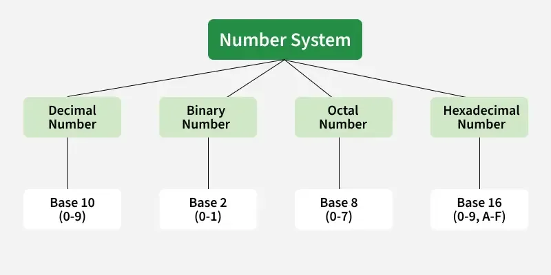
For example, 10264 has place values as,
(1 × 104) + (0 × 103) + (2 × 102) + (6 × 101) + (4 × 100)
= 1 × 10000 + 0 × 1000 + 2 × 100 + 6 × 10 + 4 × 1
= 10000 + 0 + 200 + 60 + 4
= 10264
Number System with base value 2 is termed as Binary number system. It uses 2 digits i.e. 0 and 1 for the creation of numbers. The numbers formed using these two digits are termed Binary Numbers. The binary number system is very useful in electronic devices and computer systems because it can be easily performed using just two states ON and OFF i.e. 0 and 1.
1.Decimal Numbers 0-9 are represented in binary as: 0, 1, 10, 11, 100, 101, 110, 111, 1000, and 1001
2.For example, 14 can be written as (1110)2, 19 can be written as (10011)2 and 50 can be written as (110010)2.
Octal Number System is one in which the base value is 8. It uses 8 digits i.e. 0-7 for the creation of Octal Numbers. Octal Numbers can be converted to Decimal values by multiplying each digit with the place value and then adding the result.
Octal Numbers are useful for the representation of UTF-8 numbers. Example, 1. (135)10 can be written as (207)8 2. (215)10 can be written as (327)8
The Number System with base value 16 is termed as Hexadecimal Number System. It uses 16 digits for the creation of its numbers. Digits from 0-9 are taken like the digits in the decimal number system but the digits from 10-15 are represented as A-F i.e. 10 is represented as A, 11 as B, 12 as C, 13 as D, 14 as E, and 15 as F. Hexadecimal Numbers are useful for handling memory address locations.The hexadecimal number system provides a condensed way of representing large binary numbers stored and processed.
Examples, 1.(255)10 can be written as (FF)16 2.(1096)10 can be written as (448)16 3.(4090)10 can be written as (FFA)16
Percentage is a way of expressing a number as a part out of 100. For example, 25% means 25 out of every 100, which is the same as the fraction 25 100 100 25 or the decimal 0.25.
Percentage= (part/whole)*100 Where: Part = The portion of the whole you are measuring Whole = The total or reference amount
Problem: You scored 36 out of 45 on a test. What is your score as a percentage? Step 1: Write the fraction of correct answers. 36/45 Step 2: Divide the numerator by the denominator. 36÷45=0.8 Step 3: Multiply by 100 to convert to a percentage. 0.8×100=80%
Profit and Loss formula is used in mathematics to determine the price of a commodity in the market and understand how profitable a business is. Every product has a cost price and a selling price. Based on the values of these prices, we can calculate the profit gained or the loss incurred for a particular product. The important terms covered here are cost price, fixed, variable and semi-variable cost, selling price, marked price, list price, margin, etc. Also, we will learn the profit and loss percentage formula here.
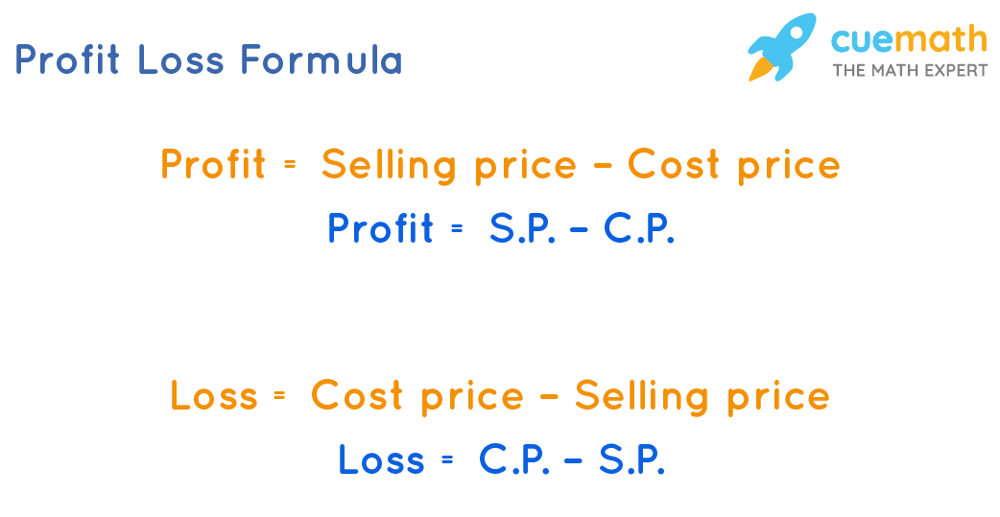
1.If a shopkeeper brings a cloth for Rs.100 and sells it for Rs.120, he has made a profit of Rs.20/-.
2.If a salesperson has bought a textile material for Rs.300 and has to sell it for Rs.250/-, he has gone through a loss of Rs.50/-.
3.Suppose Ram brings a football for Rs. 500/- and sells it to his friend for Rs. 600/-, then Ram has made a profit of Rs.100 with a gain percentage of 20%.
These are some common examples of the profit and loss concept in real life, which we observe regularly.
1.Work from Days: If A can do a piece of work in n days, then A's 1 day's work =1/n 2.Days from Work: If A's 1 day's work =1/n , then A can finish the work in n days. 3.Ratio: If A is thrice as good a workman as B, then: Ratio of work done by A and B =3 : 1. Ratio of times taken by A and B to finish a work =1 : 3.
Speed, distance, and time are essential concepts of mathematics that are used in calculating rates and distances. This is one area every student preparing for competitive exams should be familiar with, as questions concerning motion in a straight line, circular motion, boats and streams, races, clocks, etc., often require knowledge of the relationship between speed, time, and distance. Understanding these inter-relationships will help aspirants interpret these questions accurately during the exams.
The most commonly used units of speed, time, and distance are:
1.Speed: kilometers per hour (km/h), meters per second (m/s), miles per hour (mph), feet per second (ft/s).
2.Time: seconds (s), minutes (min), hours (h), days (d).
3.Distance: kilometers (km), meters (m), miles (mi), feet (ft).
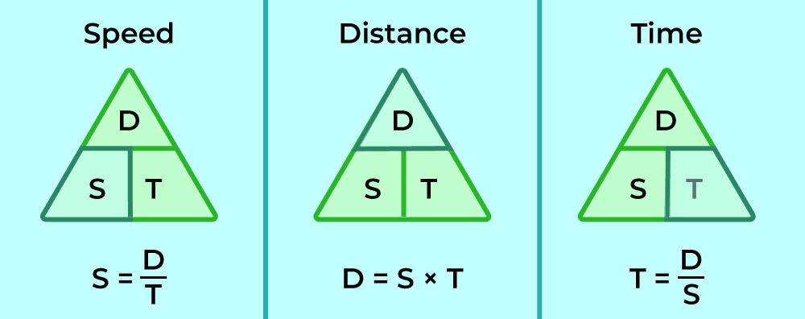
Sequences and Series Formulas: In mathematics, sequence and series are the fundamental concepts of arithmetic. A sequence is also referred to as a progression, which is defined as a successive arrangement of numbers in an order according to some specific rules. A series is formed by adding the elements of a sequence. Let us consider an example to understand the concept of a sequence and series better. 1, 3, 5, 7, 9 is a sequence with five terms, while its corresponding series is 1 + 3 + 5 + 7 + 9, whose value is 25
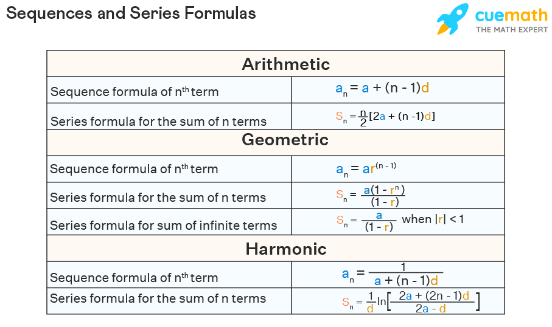
Types: 1.Seating Arrangement (linear/circular) 2.Floor/Box puzzles 3.Scheduling puzzles Approach: 1.Read carefully 2.Draw table/diagram 3.Fill direct info first 4.Use elimination
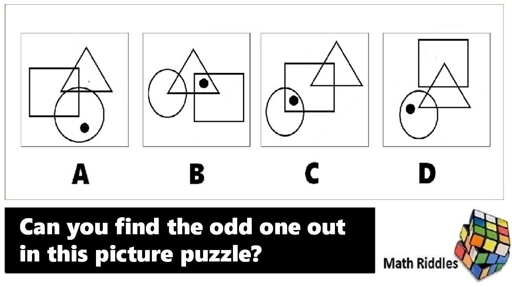
The relationship established between two individuals by birth is called the blood relation between them. The blood relations include mother, father, brother, daughter, son, etc. Blood relation is an important section of logical reasoning that is asked in almost all the competitive and entrance exams as well. The questions from blood relations require a tricky way to solve them easily. The blood relation chapter carries 2-3 marks in all the exams. Blood relation questions require a good understanding of basic concepts and terms.
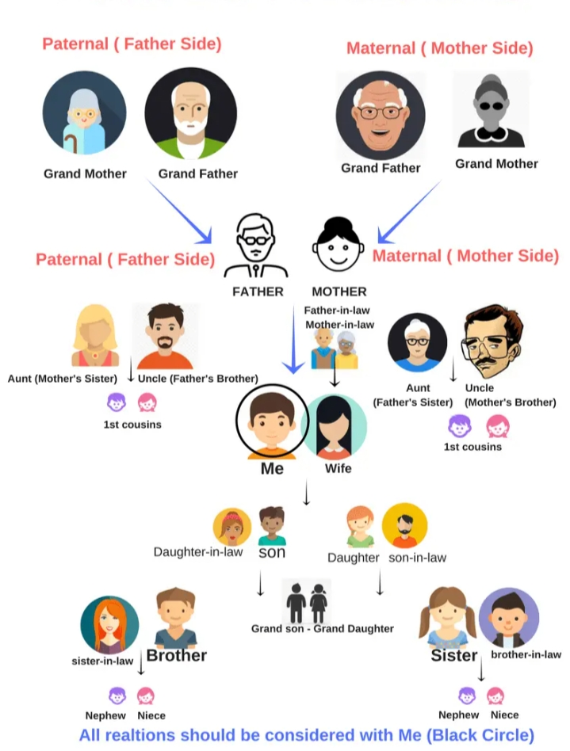
Coding-Decoding is a process of encrypt or decrypt any word, letter or sentence in a set pattern or code based on some set of rules. Coding and Decoding of information is done with various rules or patterns, so that only the right person can decipher it. Coding Decoding helps candidates to improve their logical reasoning skill and ability to focus. When any letter/word/sentence is written or said in such a way that it hides the actual meaning of that particular letter/word/sentence from others except the desired person, is called Coding. On the other hand, decoding is the process in which any letter/word/sentence is written or said in such a way that it hides the actual meaning of that particular letter/word/sentence from others except the desired person.
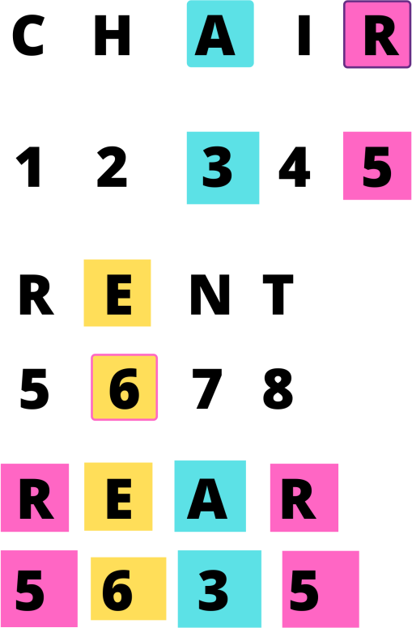
There are four main directions - East, West, North and South as shown below:
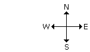
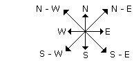
Synonyms are words that have the same or very similar meanings. For example, beautiful and attractive both describe something visually appealing.
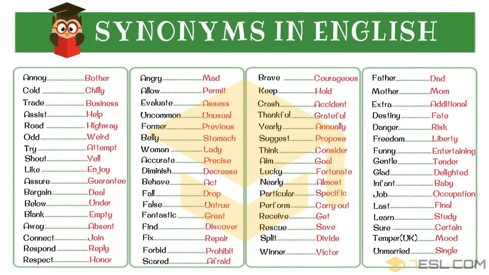
An antonym is a word that means the opposite of another word. For example, hot and cold are antonyms, as are good and bad. Antonyms can be all types of words: verbs, nouns, adjectives, adverbs, and even prepositions.
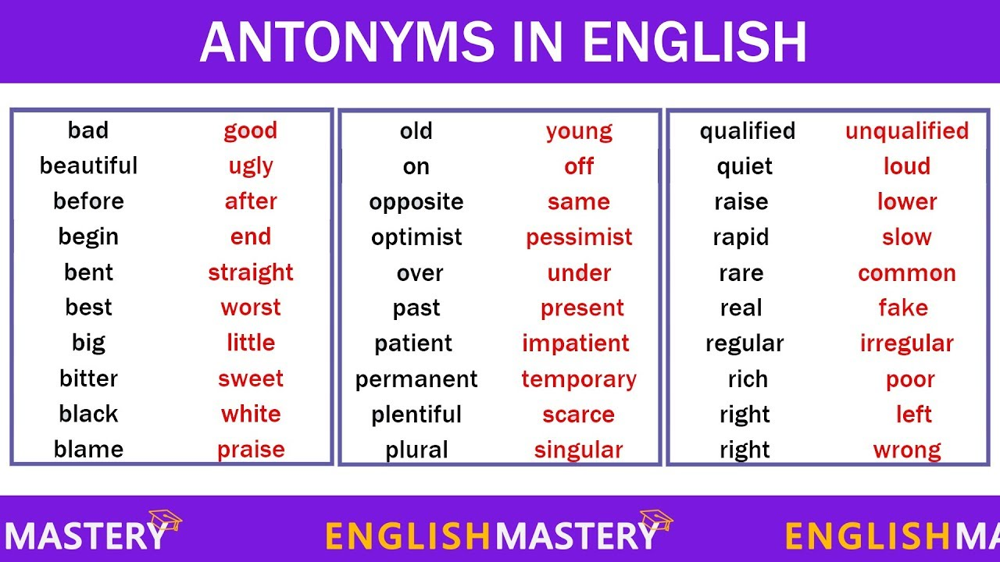
Error detection is a technique used in computer networks to identify whether transmitted data has been corrupted during communication. The sender adds redundant bits to the data before transmission,and the receiver verifies the integrity of the received frame by checking these bits. If an error is detected, the corrupted frame is discarded, and retransmission may be requested through appropriate error control mechanisms. 1.Detects errors caused by noise, interference, or signal distortion 2.Relies on redundant bits for consistency checking 3.Common techniques include Parity Check, Checksum, and Cyclic Redundancy Check (CRC) 4.Helps maintain data integrity and reliable communication
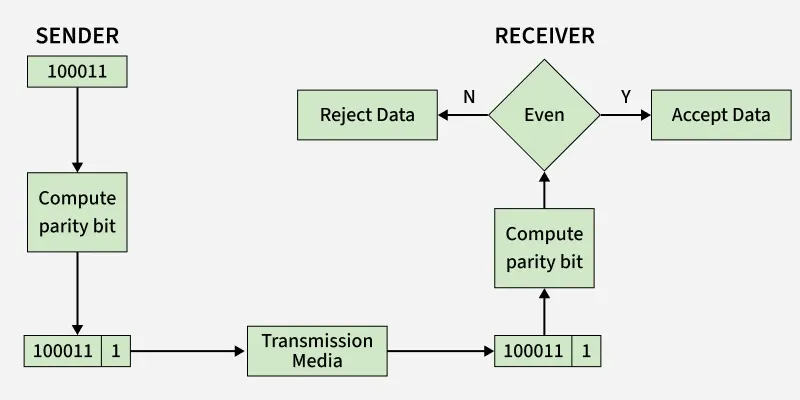
You have to find the incorrect part of a sentence or choose the correct/improved sentence.
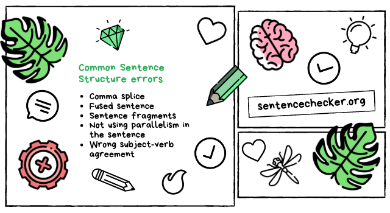
You have to choose the correct word/phrase to complete a sentence meaningfully and grammatically.
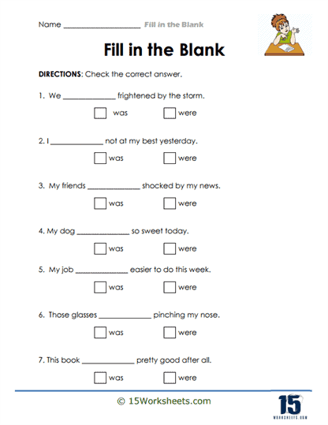